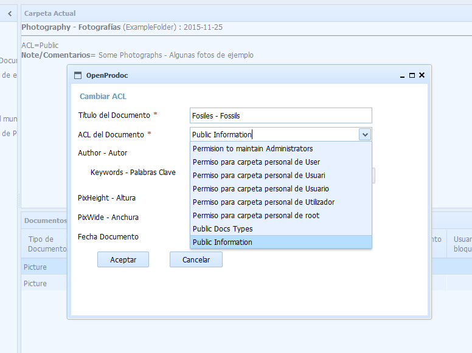

Este formulario permite modificar únicamente el ACL (permisos) del documento seleccionado.
A diferencia de la modificación del documento, que requiere tenerlo bloqueado y crear una nueva versión, esta opción permite modificar el ACL de la versión actual, sin bloquearlo ni crear un anueva versión.
No podrá realizarse si el documento ya está bloqueado, o si no se dispone de permisos de modificación como mínimo sobre el documento.
